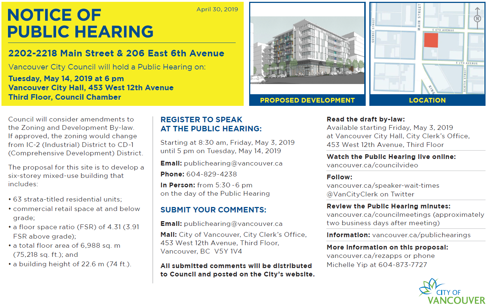

Development plans, zoning, and public hearings in Vancouver
Vancouver has several official development plans (ODPs). These plans limit the uses that are allowed in certain areas. For example, the Arbutus Corridor ODP designates the corridor for use only as a public thoroughfair. The Southeast Granville Slopes ODP sets a maximum height for buildings and lists the uses that are allowed in the area (“a mixture of residential uses, restaurant and entertainment activities, other commercial activities, and intense public activities”).
If this were any other municipality in British Columbia, these plans would streamline rezoning: they would remove the requirement for a public hearing when the rezoning is consistent with an ODP for the area. But Vancouver does not get this benefit from its ODPs. In this blog post, I present how this difference came to be and argue that the province should consider bringing the Vancouver Charter in line with the Local Government Act on this point.
Zoning and public hearings
Municipalities use zoning bylaws to control land use. The province has given municipalities the power to divide the land within their boundaries into zones of any number, shape, or size and within each, to regulate the use of the land. Common restrictions are the heights of buildings, maximum floor-space ratio, and the kinds of uses that are allowed within a zone.
Zoning significantly affects the kind of community that we create. So when a municipal council makes, amends, or repeals a zoning bylaw, it must first hold a public hearing (with one important exception, presented later). These public hearings are not as simple as council just listening to speakers at a regular meeting. These public hearings have strict notice requirements, people who would be affected by the bylaw have procedural fairness guarantees and a right to be heard, and council has disclosure obligations. The Court of Appeal for British Columbia has said:
[44] … There is an abundance of jurisprudence on the fundamental importance of notice to the legitimacy of the decision-making process in land use and zoning cases. Simply put, failure to comply with the notice requirements in relation to a public hearing undermines the opportunity afforded the public to participate in the decision-making process. Failure to comply with the notice requirement for a public hearing on proposed land use or zoning bylaws generally results in the bylaw being quashed.
[45] A public hearing on land use and zoning bylaws serves at least two important functions: it provides an opportunity for those whose interests might be affected by such a decision to make their views known to the decision-maker and it gives the decision-maker the benefit of public examination and discussion of the issues surrounding the adoption or rejection of the proposed bylaw.
[46] Procedures aimed at ensuring a minimum standard of rationality in the decision-making process are more likely to enhance the quality of the decision and the public’s acceptance of it than decisions based on undisclosed information, or on incomplete or ill-considered facts.
[47] As well, participatory procedures such as public hearings on land use or zoning bylaws tend to dispel perceptions of arbitrariness, bias or other impropriety on the part of local government in the decision-making process and tend to enhance public acceptance of such decisions. Put another way, the perception, if not the fact, of arbitrariness or bias is more likely to arise if the duty to ensure procedural fairness is not observed.
Vancouver’s Procedure Bylaw describes the process that Vancouver Council has adopted for public hearings. It is rightly onerous and time-consuming.

Official community/development plans
Official community plans and official development plans work at a level above zoning.
All local governments other than Vancouver have a tool available to them called an official community plan (OCP). The near-equivalent in Vancouver is called an official development plan (ODP). These describe a vision for planning more generally than at the level of zoning. They have certain mandatory elements, including “location, amount, type and density of residential development required to meet anticipated housing needs over a period of at least 5 years,” and “the approximate location, amount and type of present and proposed commercial, industrial, institutional, agricultural, recreational and public utility land uses.”
Official community plans cannot be adopted without a public hearing. Once a council adopts an OCP, council becomes constrained by the OCP. “All bylaws enacted or works undertaken by a council … after the adoption of … an official community plan … must be consistent with the relevant plan.” However, a council also gains some efficiency if it develops consistenly with the OCP: council “is not required to hold a public hearing on a proposed zoning bylaw” that is “consistent with the OCP.”
Vancouver’s official development plans similarly constrain Council. However, there are two major differences. First, the Vancouver Charter does not require a public hearing before passing an ODP. Only when the ODP designates a heritage conservation area does Council need to hold a public hearing. Second, even when a proposed zoning bylaw is consistent with an existing ODP, Council cannot avoid the public hearing requirement for the zoning bylaw.
Again, the Local Government Act (applying to all municipalities other than Vancouver) says that “[a] local government is not required to hold a public hearing on a proposed zoning bylaw if (a) an official community plan is in effect for the area that is subject to the bylaw, and (b) the bylaw is consistent with the official community plan.” There just is no equivalent in the Vancouver Charter.
Why is Vancouver different?
Vancouver didn’t start out so different.
As recently as 1979, all municipalities in British Columbia were in roughly the same position that Vancouver is in today on this issue. Section 721(1) of the Municipal Act as it existed in 1979 simply said, “A zoning bylaw shall not be adopted, amended or repealed except after a hearing under section 720.” There was no possibility to waive that public hearing, even when the community had an official community plan in place. Unlike the situation in Vancouver today, those OCPs also required a public hearing.
By the early 1980s, municipalities were getting frustrated with inefficiencies in the planning process, particularily the double-hearing requirement. Bill Ritchie, Municipal Affairs Minister at the time, even said, “I fully believe once an official municipal plan is in place, there is no further need for planning personnel.”
The result was Bill 62, the Municipal Amendment Act, 1985. It introduced the public-hearing waiver for zoning bylaws that are consistent with the community plan: “[w]here an official community plan is in effect for the area that is subject to a proposed zoning bylaw and the proposed bylaw is consistent with the plan, a local government may waive the holding of a public hearing on the proposed bylaw.” Municipal Affairs Minister Bill Ritchie presented the following motivation: “Bill 62 is designed to streamline the community planning process. It is designed to regulate land use controls, especially in the rural areas, to facilitate faster and more flexible responses to development proposals, and to provide greater certainty for land investors and local residents.”
The impetus for the 1985 amendment was the double-hearing requirement that had existed under the Municipal Act and which applied to municipalities other than Vancouver. Their OCPs required public hearings and so did their rezonings, even when consistent with their OCP. Vancouver has never been legally subject to this double-hearing requirement, other than when the OCP designates a heritage conservation area. So the amendment focused on the the Municipal Act, and the Vancouver Charter got left behind. Nonetheless, even though not required, Vancouver has a policy to hold public hearings before enacting official development plans. The status quo today is that Vancouver Council subjects itself to a double-hearing process: one for the ODP and another for rezonings even when consistent with the ODP.
In the early 1980s, the complaint was that two stages of public hearing was a “duplication of effort” and that planning “had a tendency to create unnecessary bureaucracy.” Vancouver is facing similar issues today. Vancouver Council and the province should deliberately consider whether this distinction between the Local Government Act and the Vancouver Charter continues to make sense. If Vancouver Council is going to use a public hearing process for its ODPs, it should get the same efficiency reward that other municipalities get (that a public hearing is not required for rezonings consistent with the ODP).
A concrete proposal
In my view, the above suggestion could be implemented by deleting s. 566(1) of the Vancouver Charter and inserting:
(1) Subject to subsection (1.01), the Council must not make, amend, or repeal a zoning bylaw without holding a public hearing on the bylaw, and an application for rezoning shall be treated as an application to amend a zoning bylaw.
(1.01) The Council is not required to hold a public hearing on a proposed zoning bylaw if
(a) an official development plan is in effect for the area that is the subject of the zoning bylaw,
(b) the official development plan was passed after a public hearing for the purpose of allowing the public to make representations to the Council respecting matters contained in the official development plan, and
(c) the zoning bylaw is consistent with the official development plan.
Notes
1. ↑ See generally Daniel Aaron Silver & Terry Nichols Clark, Scenescapes: How Qualities of Place Shape Social Life (Chicago: University of Chicago Press, 2016), Ch 7.
2. ↑ See Local Government Act, RSBC 2015, c 1, s 749 [LGA]; Vancouver Charter, SBC 1953, c 55, s 565. The Local Government Act applies to municipalities other than Vancouver. The Vancouver Charter applies only to Vancouver.
3. ↑ See e.g. City of Vancouver, Consolidated Zoning and Development By-Law, RS-1 District Schedule, online: <bylaws.vancouver.ca/zoning/zoning-by-law-district-schedule-rs-1.pdf>.
4. ↑ See generally Silver & Clark, supra note 1, Ch 7.
5. ↑ See LGA, supra note 2, s 566; Vancouver Charter, supra note 2, s 464.
6. ↑ Pitt Polder Preservation Society v Pitt Meadows (District), 2000 BCCA 415.
7. ↑ See the full list at LGA, supra note 2, s 473.
8. ↑ See ibid, s 464.
9. ↑ Ibid, s 478(2).
10. ↑ See ibid, 464(2).
11. ↑ See Vancouver Charter, supra note 2 (“Before adopting [an ODP bylaw], if the official development plan designates a heritage conservation area... the Council must hold a public hearing”, s 562(3)). See also Canadian Pacific Railway Co v Vancouver (City), 2006 SCC 5 (“[t]he Vancouver Charter imposes no statutory requirement to hold a public hearing before adopting an ODP” at para 40).
12. ↑ LGA, supra note 2, s 464(2).
13. ↑ The Vancouver Charter does incorporate several portions of the Local Government Act, but not Section 464. See Vancouver Charter, supra note 2, s 2.1.
14. ↑ The precursor to today’s Local Government Act.
15. ↑ Municipal Act, RSBC 1979, c 290, s 721.
16. ↑ See ibid (“[t]he council shall not designate a community plan as an official community plan unless it has held a public hearing”, s 711).
17. ↑ See Terry Johnston, Local Government Rural Land Use Planning in BC (MA thesis, University of British Columbia, 1990) [unpublished] (“it is clear that the dual amendments required... were a duplication of effort” at 82).
18. ↑ Ibid at 84.
19. ↑ Municipal Amendment Act, 1985, SBC 1985, c 79.
20. ↑ Ibid, s 8, which added the quoted text as s. 956(4) of the Municipal Act.
21. ↑ “Bill C-62, Municipal Amendment Act, 1985”, 2nd reading, British Columbia, Debates of the Legislative Assembly, 33-3, (21 November 1985) at 7054 (Hon Bill Ritchie).
22. ↑ See Canadian Pacific Railway Co v Vancouver (City), 2004 BCCA 192 (“it has been the policy of the City to hold a public hearing before enacting [an ODP bylaw]” at para 94).
23. ↑ Johnston, supra note 17 at 82.
24. ↑ And if Vancouver Council wants to retain flexibility, the avoidance of a public hearing (for rezonings that are consistent with the ODP) could be conditioned on the ODP itself having been subject to a public hearing.